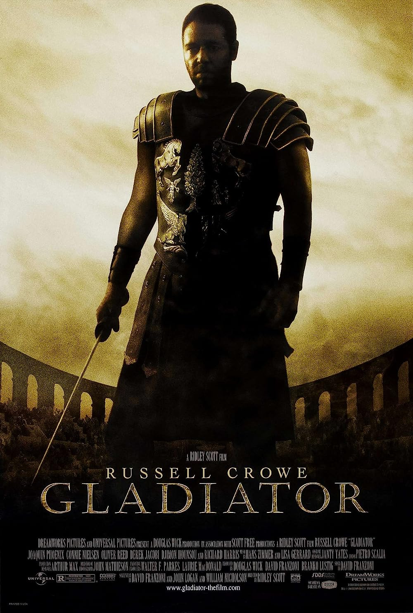
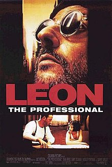

Найкріщі кіннофільми на мою думку
топ 3 стрічок усіх часів
1. Престиж
- Детектив, драма, трилер.
- США, Великобританія, 2006 рік.
- Тривалість: 125 хвилин.
Колишні напарники-ілюзіоністи Роберт та Альфред стали найлютішими ворогами. Вони обидва готові не тільки зіпсувати черговий номер колезі, а й наразити на небезпеку його життя.
2. Гладіатор
- Бойовик, драма, пригоди.
- США, Великобританія, 2000 рік.
- Тривалість: 155 хвилин.

Фільм про нелегку долю відважного генерала Максимуса, який дивом урятувався від неминучої смерті і став гладіатором.
3. Леон
- Драма, бойовик, кримінал.
- Франція, 1994 рік.
- Тривалість: 133 хвилини.

Після того, як всю сім'ю юної Матильди розстрілюють поліцейські, вона залишається жити у нелюдимого кілера Леона. Мріючи помститися, дівчинка починає вчитися небезпечної майстерності наставника.